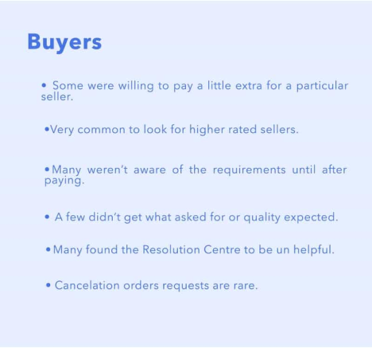
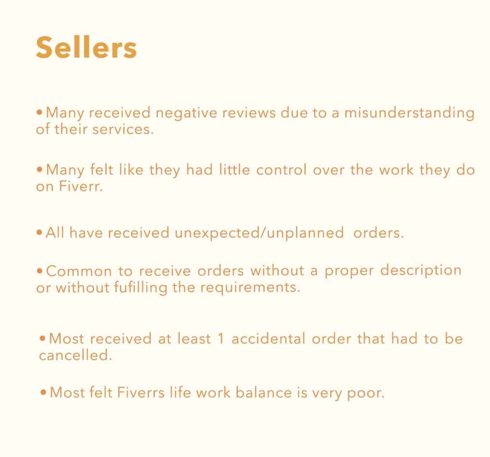
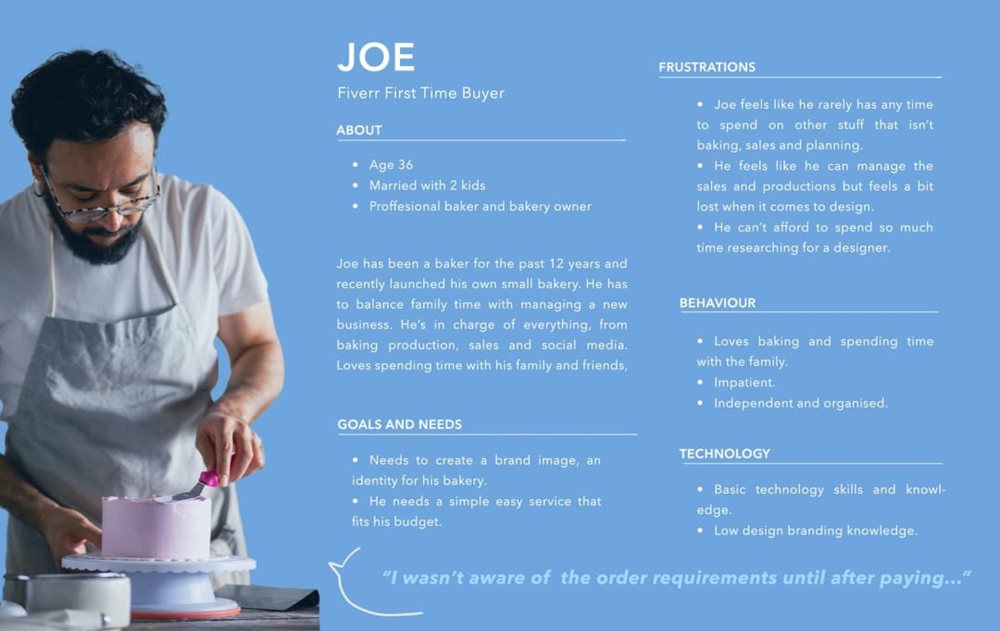
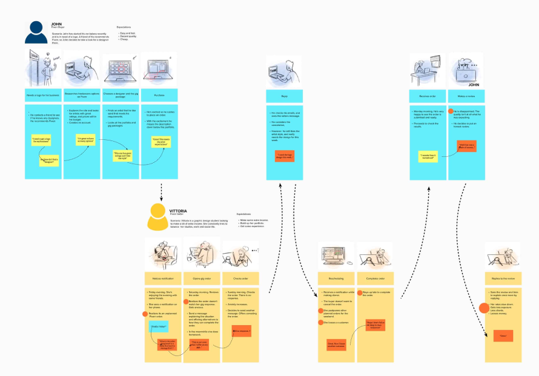
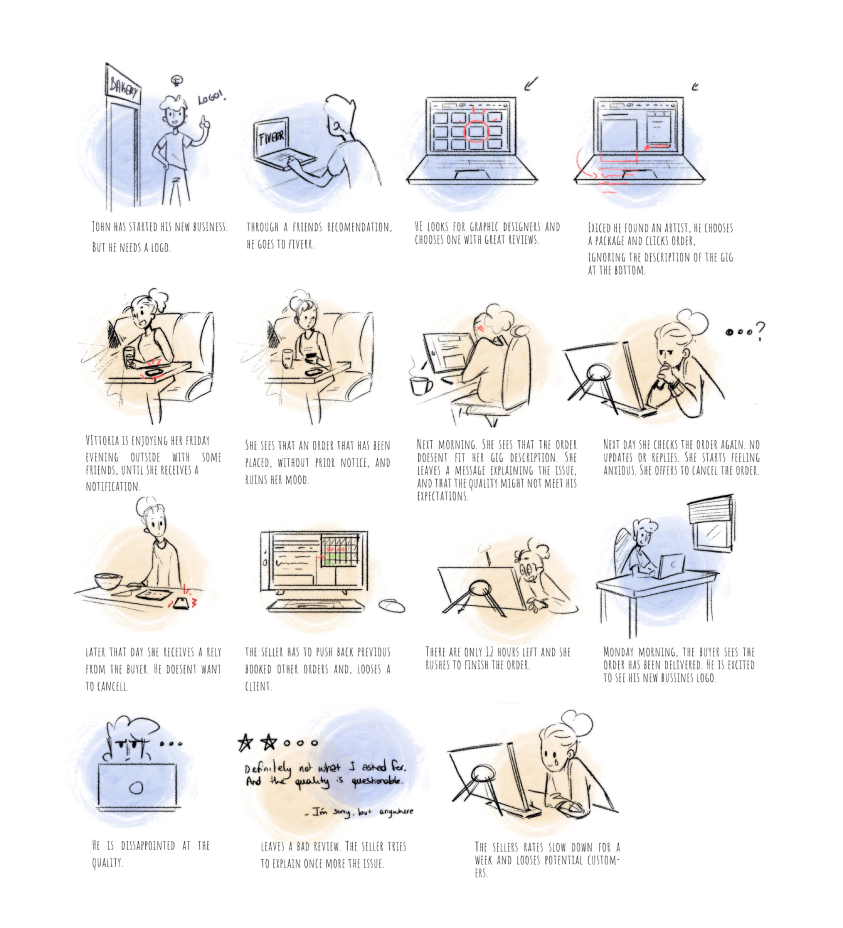
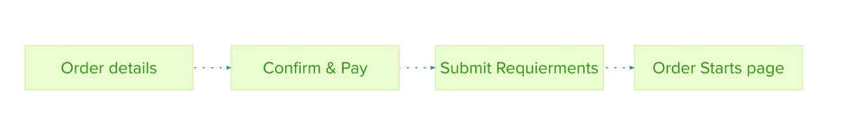
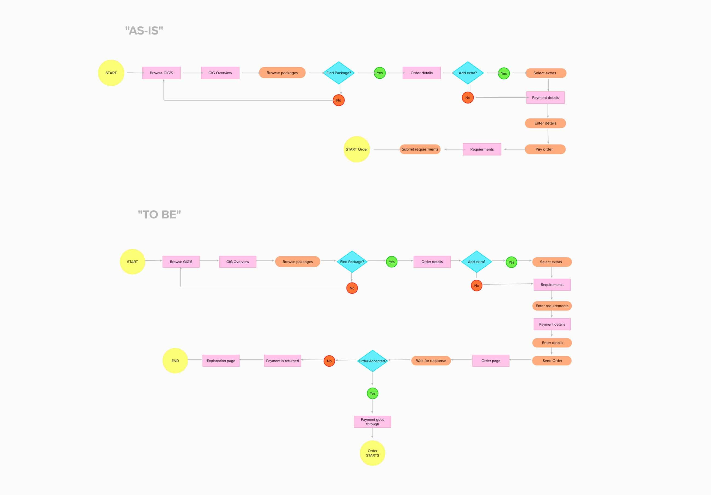

Rethinking Fiverr's ordering process
Overview
Fiverr is the fast food giant of the freelancing world, designed to make finding services cheap and easy. Whether it's finding someone to design a logo for your new business or remix your favourite Mozart composition, you'll find them on Fiverr.
Problem
As a Fiverr user myself, I’ve had to face several problematic encounters with buyers on this platform. I would like to focus on those where orders were placed by accident, or the requirements weren’t fulfilled. These situations have led to cancellations that affect my ratings, alteration of my schedule, postponing other clients' orders, and overall, a waste of both mine and the customer’s time. I talked to some fellow sellers and did some desk research to find out that I’m not the only one who has experienced this, and that it's a very common issue.
Process
User Interviews
Starting with a limited scope, I held interviews with both buyers and sellers of Fiverr to better understand the problem space from both perspectives. I asked them about their general impressions of Fiverr, how easy/difficult it was to deal with issues with clients, the outcomes and what it was that they liked/disliked most about interacting with clients on this platform. When speaking with the buyers, I asked about their requirements and expectations when looking for a particular seller, how they found the ordering process, as well as if they have ever had any negative experiences with sellers.
Since I wanted to expand and gain more information, I resorted to desk research, since it's easily accessible, to gather more insights and deepen my understanding of the overall situation. I learned valuable information from the people I met with and gained a better understanding of the underlying issues of Fiverr's ordering system. I gathered what I thought were the most useful responses from the interviews and put them together to better visualize the issues users are encountering.


Personas
It's important to understand the general type of sellers and buyers that interact on the platform. I collected the following insights into the users of Fiverr during my research:
- Sellers vary from students seeking work experience and some spending money, to professionals who use Fiverr as a main source of income.
- Buyers included content creators, small businesses, students looking for simple and quick services; 70% being from developed countries (US, UK, CA, AU, NZ).
From this, I was able to create two personas, one for the buyer and another for the seller.

Customer Journey
Subsequently I created two user journeys, one for each persona. I initially made them as completely separate journeys, but I thought I could try combining them. Intertwining both journeys helped me better identify pain points and how both users, by interacting through this platform, create problems for each other without even knowing.


I also created a storyboard based on these journeys to give a clearer picture of the scenario of placing an order.
I personally find storyboards to be an excellent tool to communicate, since they’re memorable and easy to understand at a glance. In this case, it helped me to better understand the perspectives of both buyer and seller, and the differences in how they experienced the interaction on Fiverr. By visualizing and dividing information, it helped make sense of it, and start gathering the pain points.
Some important things I learnt
- Most unpleasant experiences begin with unplanned/unexpected orders. It hampers sellers' planning and organizing of their workload, and affects work-life balance amongst other things.
- Delivery countdown begins as soon as the order starts, even when the requirements aren’t complete. This can directly affect the quality of the result.
- Sellers have little control over the orders they receive and are anxious about bad reviews and cancellations.
- Some buyers place orders without reading the gig description/requirements.
- Buyers can receive a product that didn't match their expectations.
Ideas
What seems to be the most important to me is to solve the unwanted/unexpected orders issue. As mentioned previously, the buyer is not faced with requirements until after paying for the order, and sellers have to forcefully take orders they weren’t expecting or that they simply didn’t want. Therefore, I believe redesigning the ordering process could reduce the number of unintentional/uninformed orders and hence increase user satisfaction overall.
I created a task flow of Fiverr's current ordering process, to better visualise how to tackle this issue:

I then brainstormed some ideas for redesigning the ordering process:
- Moving the requirement step before the order is placed.
- Adding a “pending approval” page, before the order page, where the offer is sent by a buyer, and the artist can accept or reject with no consequences to their ratings.
- Adding a cancel or accept button to the current order page. If the seller can’t reply, the order will automatically be closed in 24 hours. The payment is refunded or goes through depending on the agreement.
- Combining both A and C options.
I leaned more towards the last option since it gives a heads up to both parties: sellers get control over what they work on and buyers don't waste money on services they might not have needed and can be informed about what it is they do need. This way buyers can move on faster to a different seller, saving both time and money. I then created a user flow to show the new order process.

Results
During the limited time available, I couldn't design and prototype the idea. So, I decided to gather feedback from those who were interviewed by showing them rough sketches of the new ordering process design. Their feedback proved to be invaluable and constructive.
Sellers emphasized that the "agreeing" step was essential. The ability to manually filter their orders would help them discover more interesting and suitable projects while avoiding those that weren't a good fit.
Buyers, on the other hand, expressed that seeing the requirements before sending an offer could be helpful. Some were concerned that this might remove the "easy and fast" feeling. However, many agreed that in the long run, it could save time and prevent misunderstandings during the order placement process.
Although the new order process may seem longer at first glance, it has the potential to increase delivery speed. By minimizing accidental orders and misunderstandings leading to cancellations, sellers' ratings would be less affected, resulting in fewer lost sales. Ultimately, a higher success rate would lead to a better user experience and increased sales.
Lessons learnt
This has been a very interesting exercise to do, and a great way to apply all I’ve learnt in the past couple of months since I started a UX/UI course. During the process I’ve encountered plenty of obstacles and imperfections. Nevertheless, each one of those confusing moments led to more learning and excitement. Even though my scope was limited, it allowed me to go beyond my assumptions and learn from other people’s experiences and points of view. I was thrilled to see positive feedback, and happy to have space to improve as well. Overall, it’s been a great opportunity to learn and start improving as a UX researcher.
Other projects
Find Your New Home | UX/UI Design
Reimagining the “Find Your New Home” tool for a Scottish housing development.
Read case study